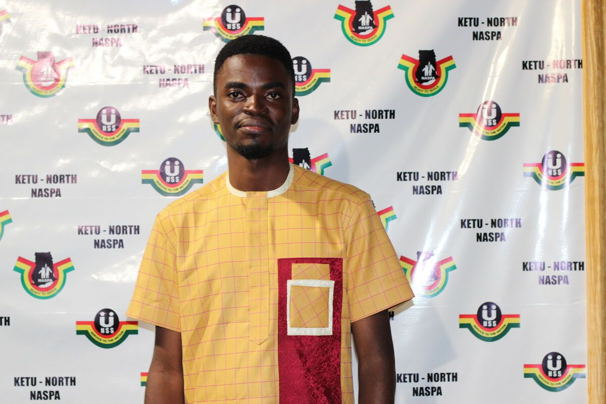
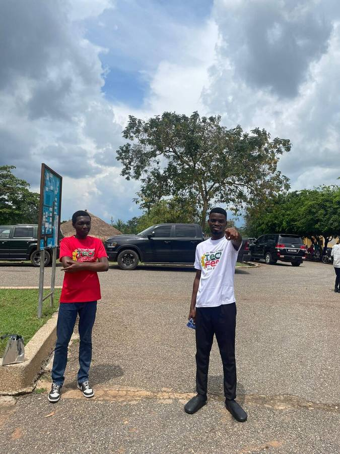
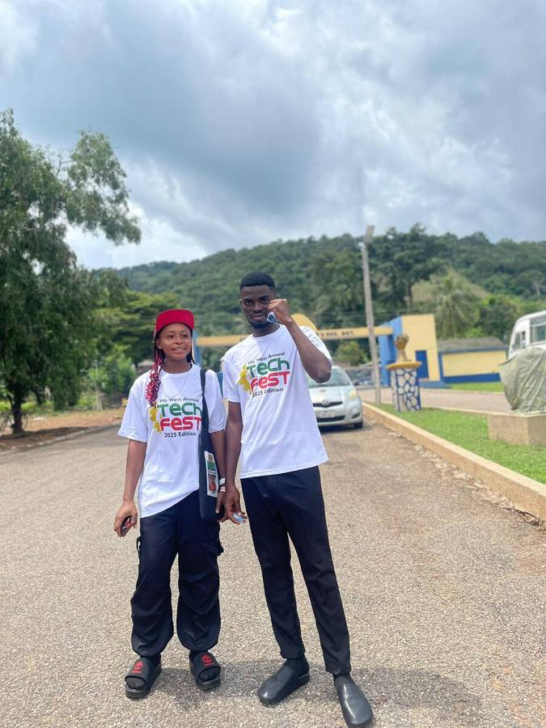
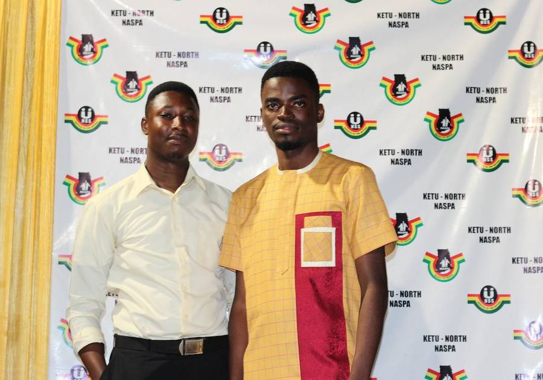
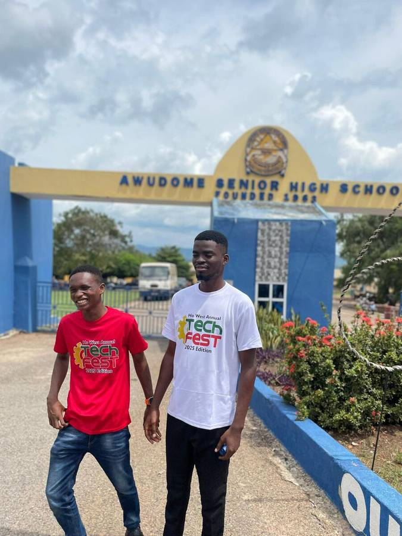
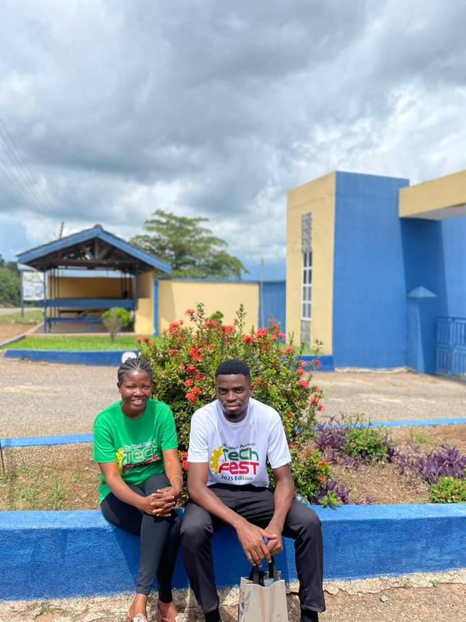
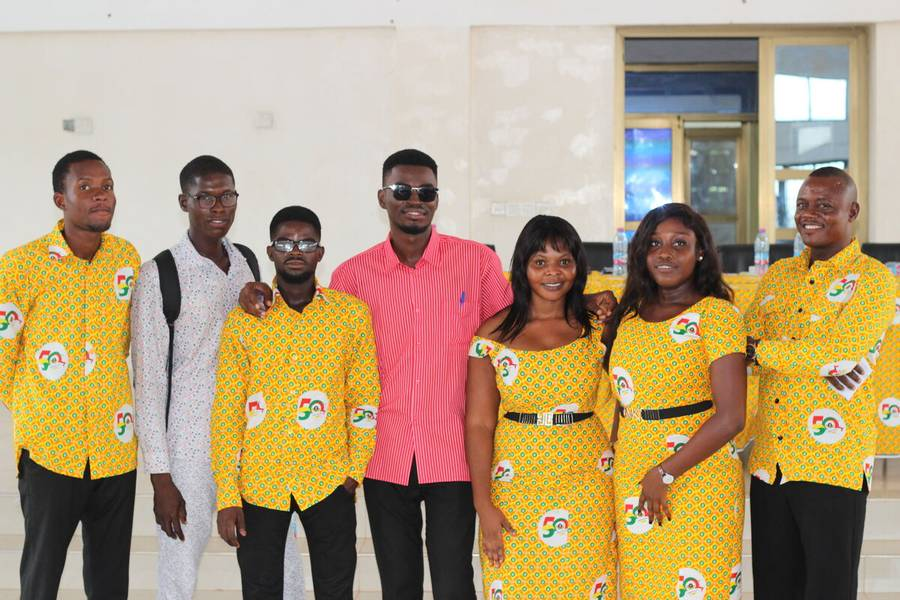
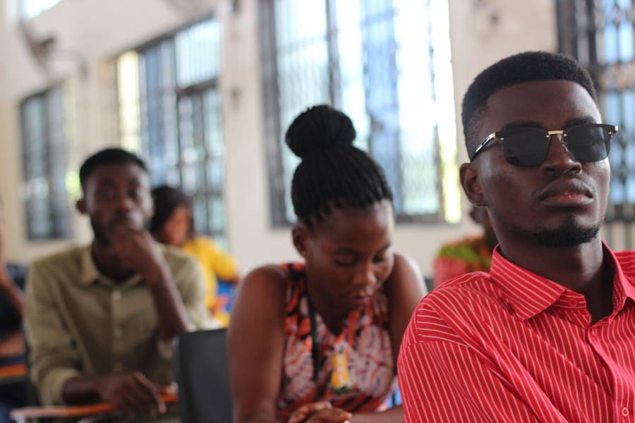

A Glimpse into the Process.
From hospital dashboards built in the early hours of the morning to award ceremonies and community tech festivals — this is the work behind the work.

The ALERA interface — designed for speed and clarity in high-pressure medical environments.

Focused and building. Engineering the next generation of digital tools for our community.

Rental Flow — a seamless booking experience that puts mobility within everyone's reach.

Streamlined patient data — ensuring vital records are always accessible at a doctor's fingertips.

On the ground at Ho West Tech Fest 2025 — taking innovation directly to the streets.

A moment of recognition — Excellence in Innovation at the 2025 Ho West Tech Fest ceremony.

Honored for dedicated service — a testament to sustained impact in the Ketu-North community.

The launch of the 3rd edition of the Ho West Annual Tech Fest — proof this movement was only growing stronger.

Real-time lab reporting — cutting wait times and improving patient outcomes with every result generated.

The NASPA team — building lasting connections through shared service and unyielding hard work.

Pharmacy integration — managing critical inventory to ensure medications are always in stock when needed.

Community-first: Engaging with local developers to brainstorm and build real solutions to real problems.

A moment of reflection. Because "Success Above Dreams" requires both deep focus and a clear mind.

Collaboration in action — bouncing ideas around, whiteboarding, and finding elegant solutions.

Connecting with the tech community — sharing insights, growing, and learning from other developers.

Finding balance. The best code is often written after stepping away from the screen and experiencing life.